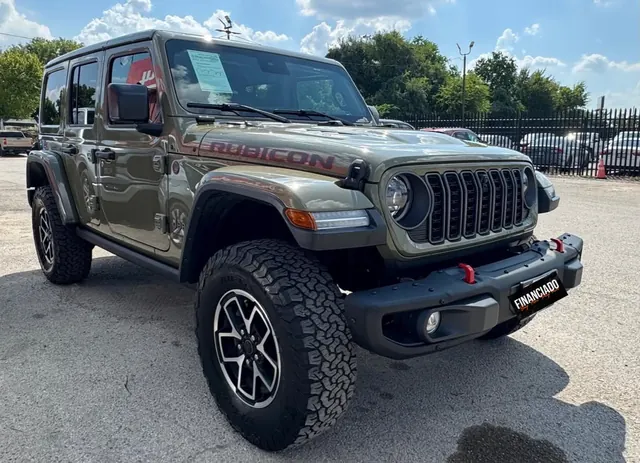
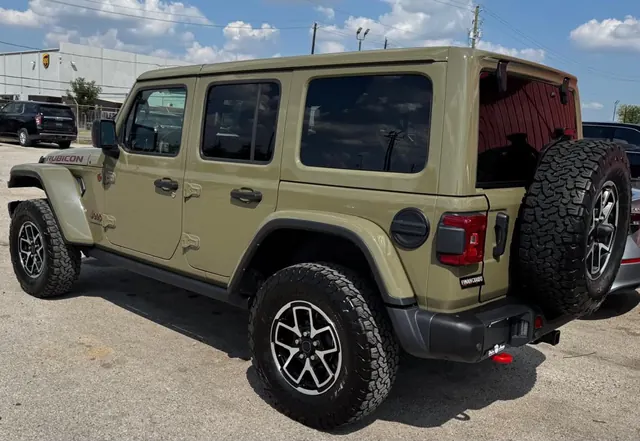

2024 Jeep Wrangler Rubicon
Sand green • ID CCH-04


General
| Year | 2024 |
| Make | Jeep |
| Model | Wrangler Rubicon |
| Type | SUV |
| Color | Sand green |
| Mileage | 15,000 miles |
| Seats | 5 seats |
Engine & transmission
| Engine | 3.6L Pentastar V6 |
| Power | 285 hp |
| Torque | 260 lb-ft |
| Transmission | 6-speed manual |
| Drivetrain | 4x4 |
| Fuel | Gasoline |
Capacities
| Max towing | 5,000 lbs |
| Payload | 1,327 lbs |
| Fuel tank | 21.5 gallons |
| Fuel economy | 16/19 MPG (city/highway) |
Dimensions
| Length | 188.4 inches |
| Width | 73.9 inches |
| Height | 73.6 inches |
| Wheelbase | 118.4 inches |
Body
| Stock wheels | 17 inches |
Visible in the photos
- 4 doors
- All-terrain tires
- Spare tire
- Tow hooks
- Hard top
Great for
Weekend adventures: the beach, mud and roads off the pavement.
Specs for this model/trim per manufacturer and automotive media. Confirm this unit’s exact specs with the dealer.
Motor y caja de serie del Rubicon según ficha técnica Stellantis/dealers (3.6L 285 hp / 260 lb-pie). Manual de 6 velocidades es la transmisión de serie; la automática de 8 velocidades es opcional. Tracción 4x4 confirmada (Rock-Trac de serie en Rubicon).
Se asume Rubicon 4 puertas manual 3.6L (la más común) según fichas de concesionario; si la unidad es 2 puertas: 17/23 MPG, tanque 17.5 gal, largo 166.8, ejes 96.8 y remolque 2,000 lbs. Remolque máximo de 5,000 lbs con paquete de remolque. / Assumed 4-door manual 3.6L Rubicon (most common) per dealer listings; if the unit is 2-door: 17/23 MPG, 17.5-gal tank, 166.8 in length, 96.8 in wheelbase, 2,000 lbs towing. 5,000-lb max with tow package.